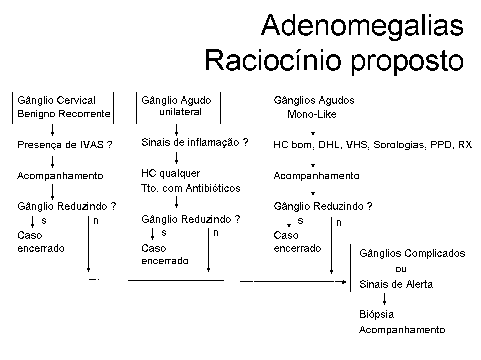

ADENOMEGALIAS
CONCEITO:
Supraclaviculares sempre anormais
Ilíacos sempre anormais
Poplíteos sempre anormais
Epitrocleares: normais até 5 mm
Inguinais: normais até 15 mm
Demais regiões: normais até 10 mm
CAUSAS INFECCIOSAS:
Reação ganglionar a infecções na área de drenagem linfática
Adenites inespecíficas: S.aureus; Streptococcus do grupo A
Infecções por vírus da família herpes: CMV e EBV
Tuberculose ganglionar; Infecção pelo BCG
Infecção pelo HIV; Rubéola; Toxoplasmose
Doença da Arranhadura do gato: Bartonella henselae
Alguns vírus respiratórios: adenovírus, coxsackie
Micoses profundas: esporotricose, paracoccidioidomicose
Kawasaki
CAUSAS NEOPLÁSICAS:
Linfomas; Leucemias; Tumores da tireóide; Neuroblastoma
Outros tumores; Metástases
PARECE, MAS NÃO É ADENOMEGALIA...
Cisto branquial; Cisto broncogênico; Higromas císticos
Cisto tireoglosso; Cisto epidermóide
ADENITE:
Caso particular de adenomegalia; Geralmente de causa infecciosa
Inflamação local (com dor e eritema); Flutuação às vezes
Drenagem de material purulento, ocasionalmente
Sinais e sintomas sistêmicos (febre, toxemia)
DADOS PARA COLHER NA HISTÓRIA:
Faixa etária
Estado da dentição
Contatos com animais
Lesões de pele
Presença de esplenomegalia
Perdas de peso
Contatos com pessoas doentes
Estado vacinal
PADRÕES DE ADENOMEGALIAS OBSERVADOS HABITUALMENTE:
Padrão 1: Cervicais benignos recorrentes
Padrão 2: Cervicais unilaterais agudas
Padrão 3: Generalizadas febris com síndrome mono-like
Padrão 4: Complicadas (demoradas, ou com sinais de malignidade)
Padrão 1 – Cervicais benignos recorrentes
Criança sadia; ganhando peso; bem corada; lactente ou pré-escolar;
Gânglios cervicais bilaterais, pequenos (até 0,5 cm), indolores, múltiplos, móveis, elásticos, não aderidos, sem sinais flogísticos;
Recorrentes: reaparecem a cada episódio de infecção de vias aéreas;
A tranquilidade e a certeza de que são benignos decorre de os gânglios desaparecerem ou diminuírem até ressurgirem novamente;
A conduta é expectante, com obrigatório seguimento da criança; se houver muita pressão e ansiedade, pode ser solicitado um hemograma, que para concretizar o padrão 1, tem que ser normal;
Padrão 2 – Cervicais unilaterais agudas
É o padrão típico da adenite. Geralmente a adenite é cervical. Geralmente ocorre em pré-escolares e lactentes. É mais rara em escolares. A adenite causa sinais e sintomas sistêmicos, com febre, leucocitose, desvio à esquerda, e toxemia. Localmente ocorre dor, rubor, calor, edema quente, endurecimento no local do(s) gângli(os) e a possibilidade de envolvimento de uma massa ganglionar. Pode ocorrer a formação de pus no interior dos gânglios, os quais passam a comportar-se como abscessos, com melhora após drenagem ou, mais lentamente, após reabsorção. Na adenite, a segurança e a certeza de benignidade acontece com a redução do gânglio na vigência de tratamento com antibióticos; como quase sempre a etiologia é estafilocóccica ou estreptocóccica (GAS), opta-se por uma cefalosporina de 1ª geração (cefazolina seguida de/ou cefalexina); menos comumente, pode ocorrer casos de adenomegalia com rinossinusite, quando o melhor é ceftriaxona ou ampicilina-sulbactam se forem internados (estes pacientes apresentam-se como: respiradores bucais, com roncos noturnos, tosse há semanas, catarro antigo em vias aéreas superiores, olheiras, velamento de seios maxilares ao RX, velamento da coluna aérea do cavum por hipertrofia de adenoides). Neste padrão de adenomegalia, solicita-se apenas hemograma pela urgência. Se o gânglio estiver reduzindo com os antibióticos e, se não houver alterações grosseiras (anemia com hto < 27%; plaquetopenia; leucopenia; blastos), dá-se o caso por resolvido. Não esqueça de prescrever budesonida nasal!
Padrão 3 – Generalizadas febris, mononucleose-like
São adenomegalias que fazem parte de uma síndrome maior; ocorrem alguns dos seguintes achados: febre, hepatoesplenomegalia, exantema; edema palpebral simétrico, exsudato amigdaliano, linfocitose atípica, pouca elevação de transaminases, aumento de DHL na faixa de 1000 a 1500. Nestes pacientes, é importante a pesquisa sorológica abrangente, além de
Hemograma pelo Banco de Sangue; VHS; DHL; Sorologias (ELISA):Toxo; CMV; EBV-Capsídeo Viral; HIV. Além de: PPD; Rx (ou TC) de tórax. Novamente, há certa tranquilidade em verificar que houve redução dos gânglios a dado momento da doença, o que diminui o risco de malignidade.
Padrão 4 – Complicadas
São adenomegalias com gânglios crônicos (> 8 semanas) ou de rápido crescimento sem sinais flogísticos, ou com sinais de malignidade, ou que preocupam a família ou o médico com a possibilidade de malignidade. Nestes casos, está indicada a biópsia do gânglio. O paciente deverá ser internado para investigação e, enquanto se batalha para conseguir a biópsia, solicitam-se os exames de sorologia e imagem do padrão 3, além de hemograma e DHL seriados.
SINAIS DE ALERTA PARA MALIGNIDADE
Palidez cutâneomucosa ou anemia moderadas;
Febre persistente;
Emagrecimento;
Hepato e/ou Esplenomegalia acentuadas e persistentes;
Gânglios: aderidos; coalescentes;
Endurecidos, com consistência lenhosa ou pétrea;
Supraclaviculares ou ilíacos;
DHL acima de 2000 ou VHS acima de 100;
Envolvimento mediastinal no RX de tórax.
Indicações formais de biópsia
Gânglio supraclavicular;
Massas de crescimento rápido sem diagnóstico confirmado;
Gânglios endurecidos ou aderidos a outros planos;
Ausência de sinais flogísticos em massa ganglionar;
Adenomegalia que incomoda por mais de 8 semanas.
CONDUÇÃO APÓS IDENTIFICAÇÃO DO PADRÃO DA ADENOMEGALIA

HC = Hemograma completo; IVAS = infecção de vias aéreas superiores
CRITÉRIOS DE INTERNAÇÃO: por razões locais que são específicas do nosso serviço, recomendamos internar as crianças com os padrões 3 ou 4 para facilitar a condução dos casos. Em qualquer contexto, devem ser internadas as crianças com estado geral comprometido, em especial as menores de 2 anos; Intolerância à medicação oral ou falha de tratamento oral prévio também são motivos de internação.
TRATAMENTO ESPECÍFICO DE PACIENTES COM ADENITE BACTERIANA
1ª escolha: EV cefazolina 100 mg/kg/dia de 6/6h ou
VO cefalexina 50 a 100 mg/kg/dia de 6/6h
2ª escolha: clindamicina 10 mg/kg/dose de 8/8h ou 6/6h. A clindamicina deve ser administrada preferencialmente por via venosa. A formulação oral manipulada pode ser tentada, mas é mais apropriada para terminar os tratamentos iniciados por via venosa, uma vez que dão muita dispepsia e o sabor é muito amargo.
CASOS QUE NÃO SE ENCAIXAM NOS PADRÕES DESCRITOS:
A maioria dos pacientes vai enquadrar-se em um dos padrões descritos, mas nem todos. Por isso, o seguimento é indispensável. Pensar nas muitas etiologias possíveis é também muito importante para o diagnóstico. Em todos os casos são necessários anamnese e exame físico minuciosos e exames complementares bem indicados, de forma gradativa.
REFERÊNCIAS:
Farhat CK, Carvalho ES, Carvalho LH, Succi RC, editors. Infectologia Pediátrica. 3.ed. São Paulo: Atheneu; 2007.
Krugman S, Katz SL, Gershon AA, Wilfert CM. Doenças Infecciosas na Infância. 9.ed. Rio de Janeiro: Guanabara Koogan; 1994.
Kelly CS, Kelly Jr RE. Lymphadenopathy in Children. Pediatr Clin North Am 1998 Aug;45 (4):875-88.
Freire LM, Teixeira Júnior JF. Diagnóstico Diferencial das Adenomegalias. In: : Tonelli E, Freire LM, editors. Doenças Infecciosas na Infância e Adolescência. 2.ed. Rio de Janeiro: Editora Medsi; 2000. p.1850-67.
Responsáveis pela elaboração da rotina: Dr. Marco Antonio Alves Cunha e Dr. Iúri Leão de Almeida